Sign in
Approved split desktop layout, transparent company emblem and company account form.
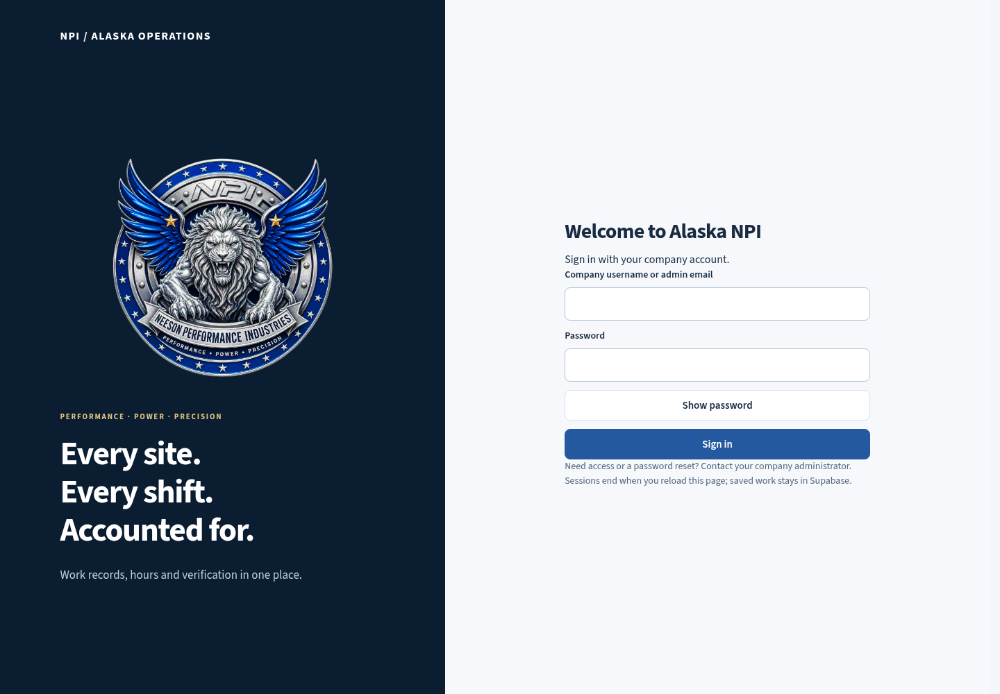
Local app with fictional records and simulated camera/GPS. Automated checks supplement manual screenshot review; this is not production security certification.
Full scope and deployment acceptance · Sign-in Lighthouse · Fourteen-state Lighthouse flow · axe results
Approved split desktop layout, transparent company emblem and company account form.

Oversight navigation, review counts and actionable operational summary.
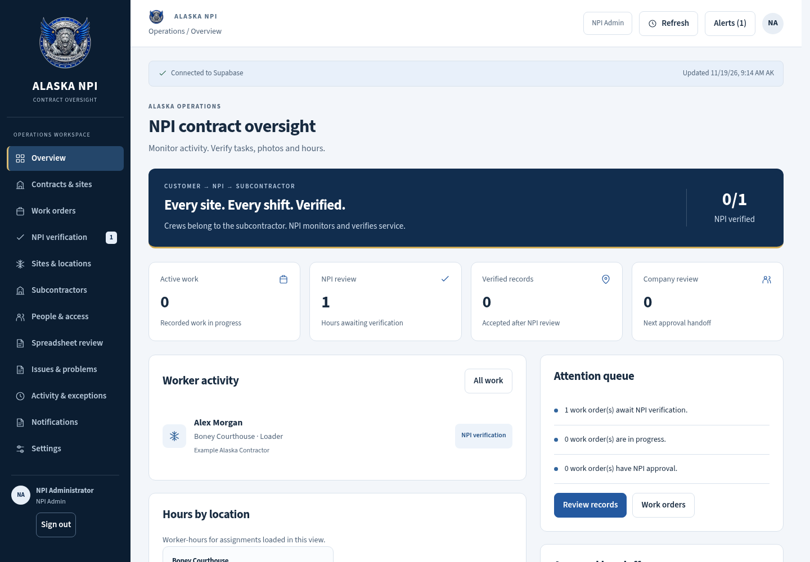
Search, filters, creator and assigned team are visible. Searches are server-paginated.
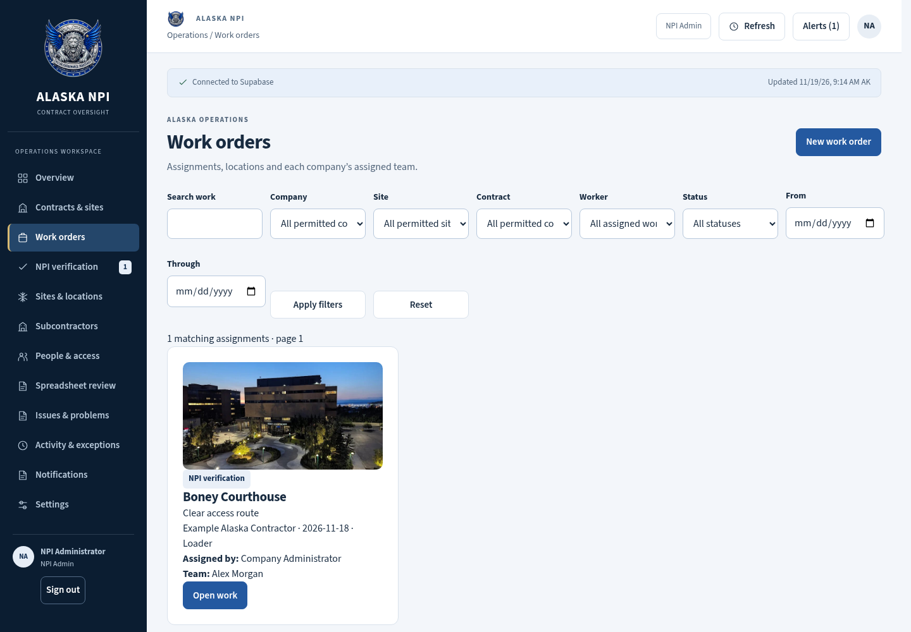
Attendance, assigned workers and evidence share one work record.
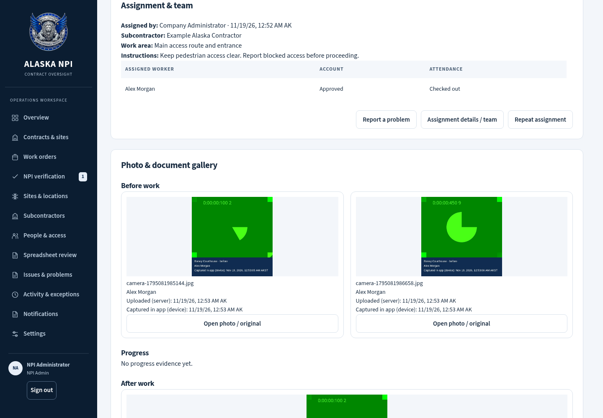
Before and after evidence is grouped by stage. Training camera images are synthetic.
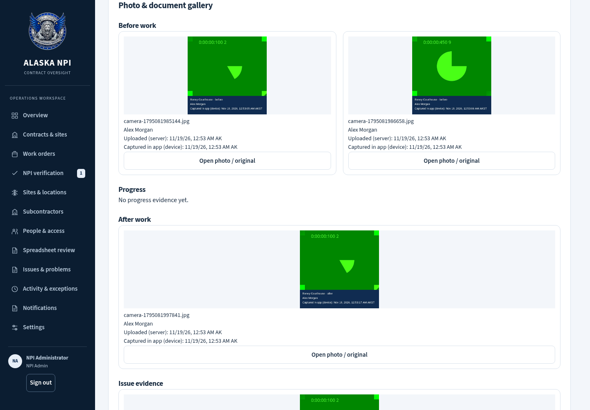
Time-labelled preview and unchanged original link are separate.
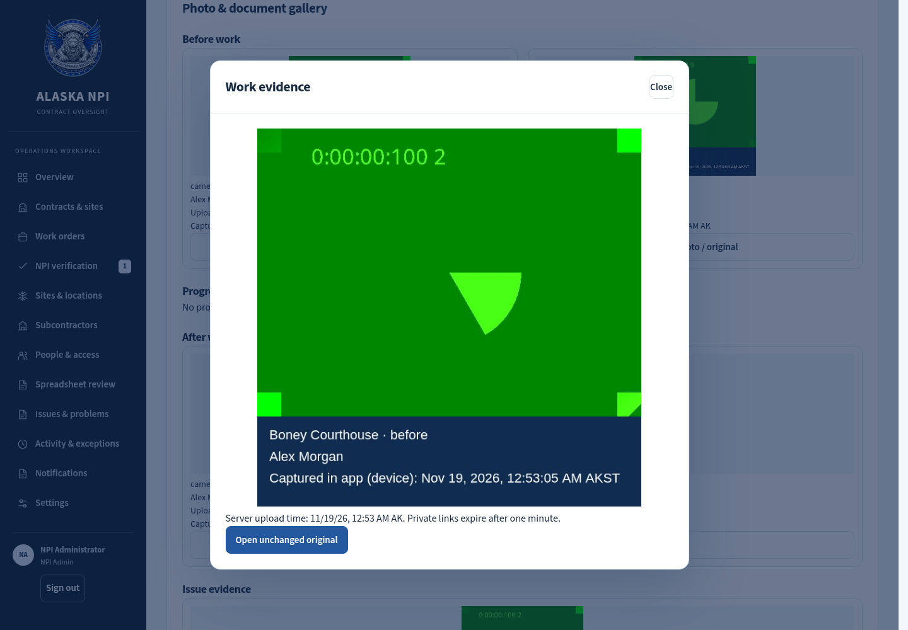
Organisation-scoped email settings and escalation deadline.
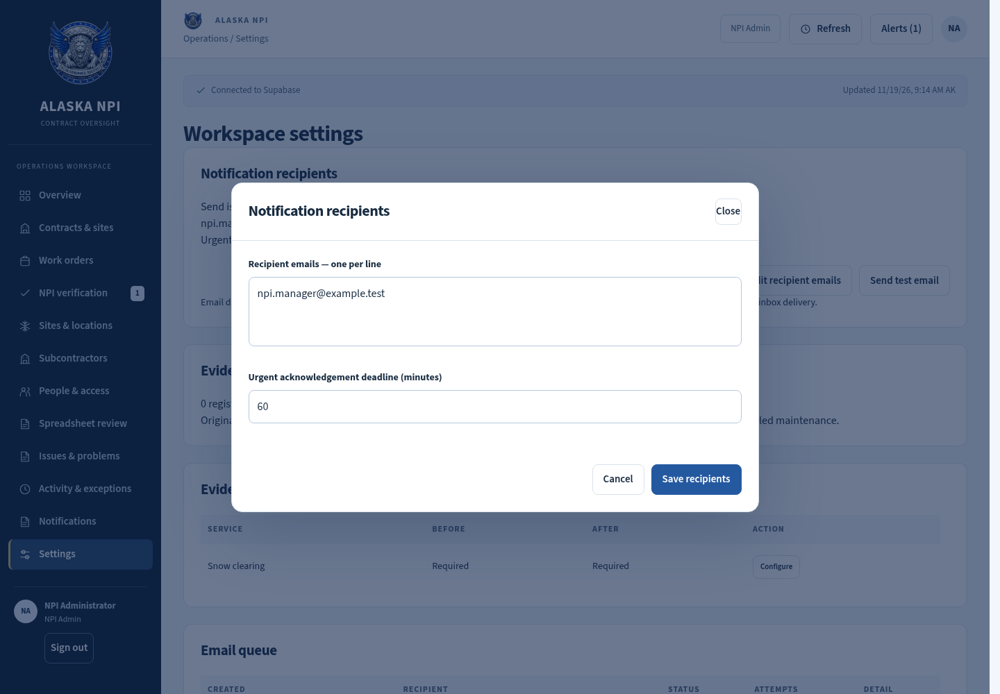
Owner, status, resolution and comments retained with the work.
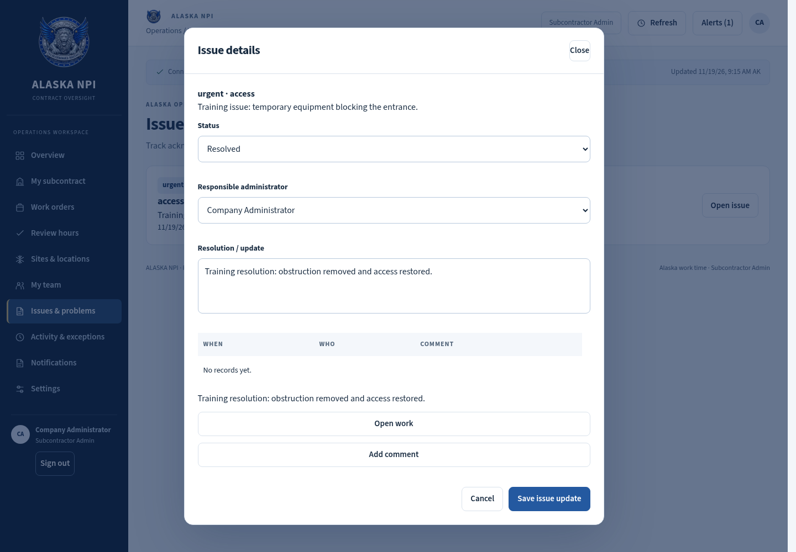
Single-column phone layout, site photo, prominent assignment action and four bottom links.
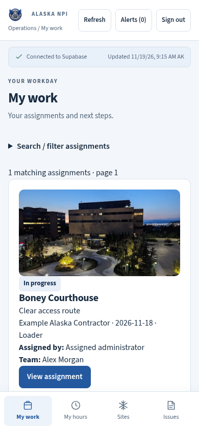
Two prepared photos, individual removal and retry-safe batch submission.
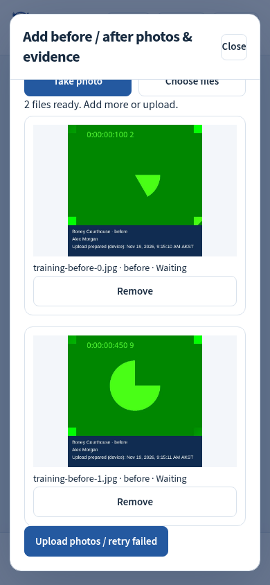
Simple category, urgency and description; critical danger instruction visible.
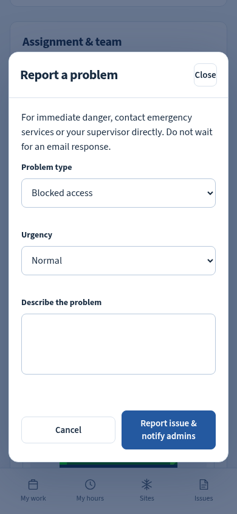
Capture, keep and retake controls; repeated captures stay in one queue.
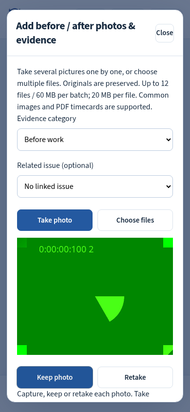
Explicit success dialog explains the next company review step.
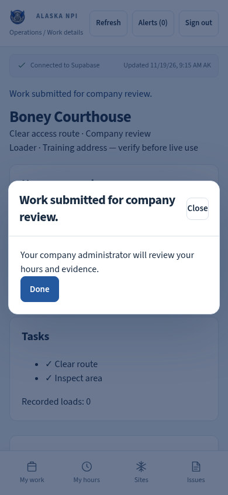
Incomplete-work acknowledgement is separate from accepting or adjusting hours.
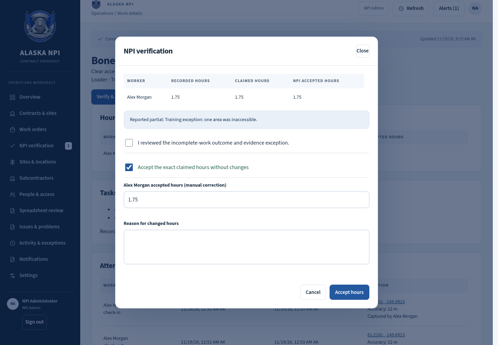